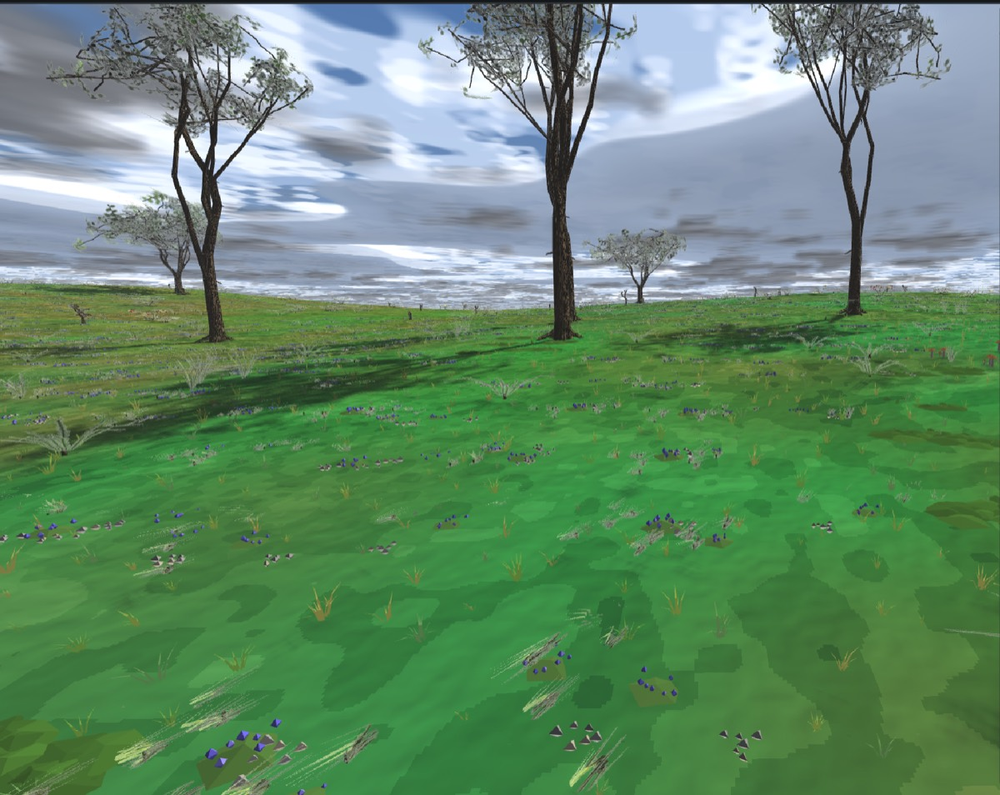
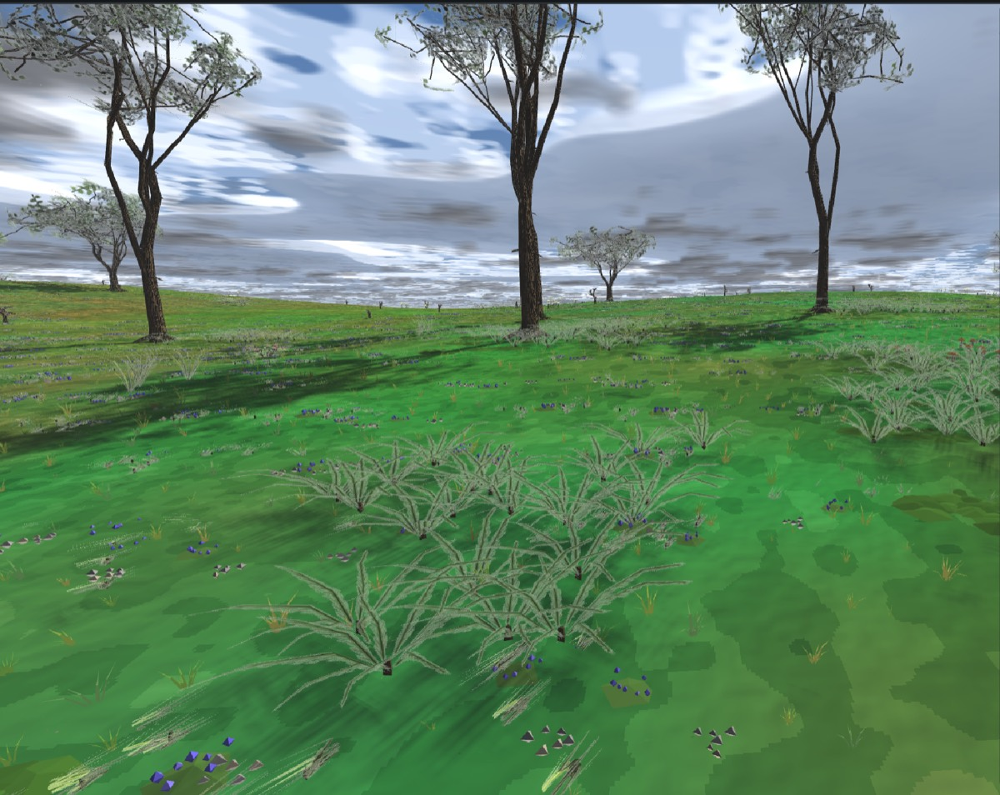
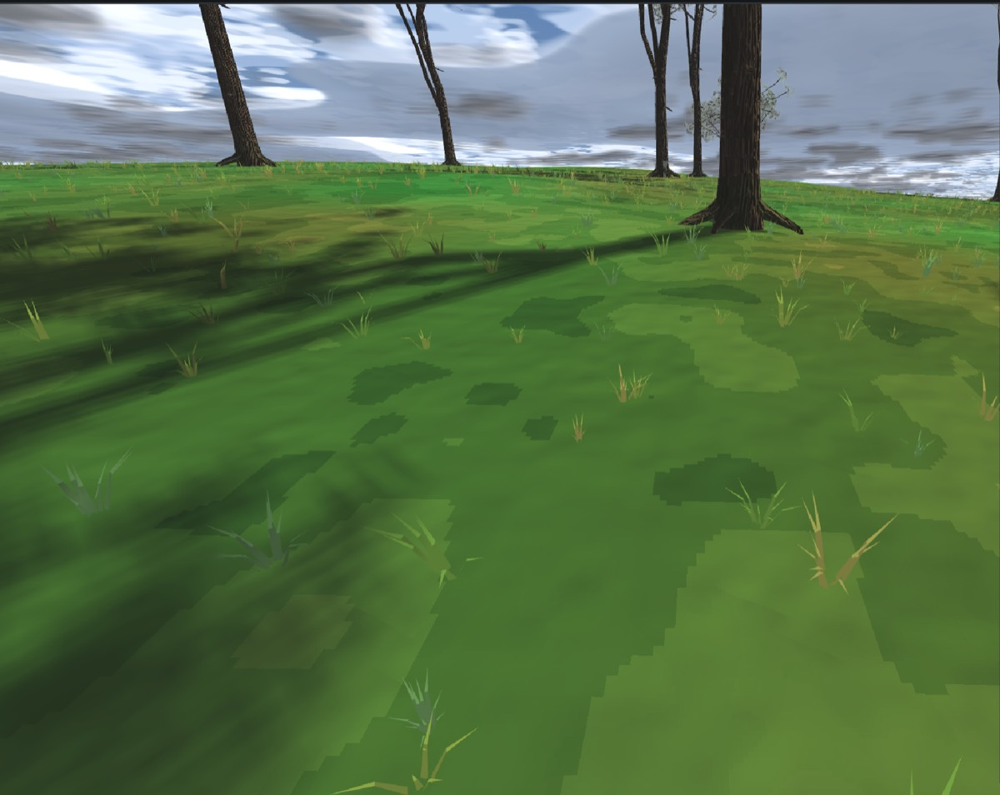
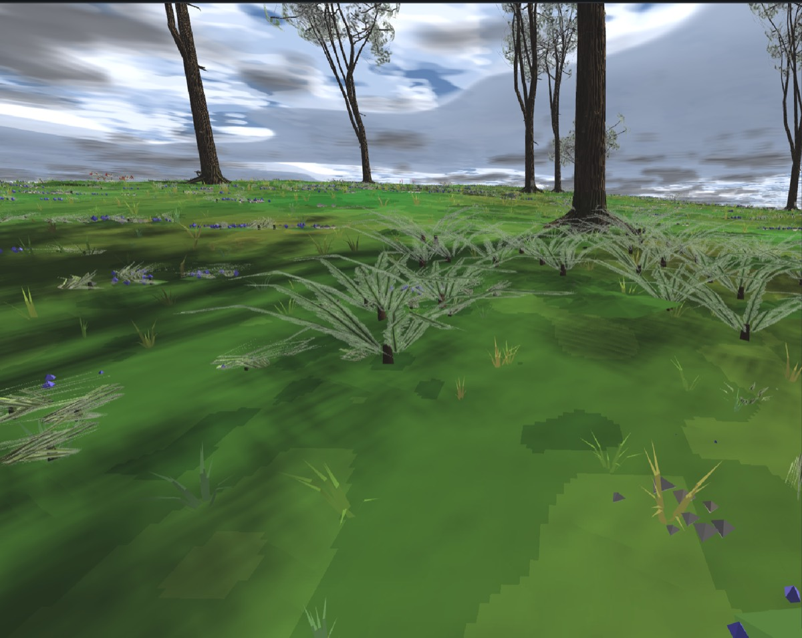
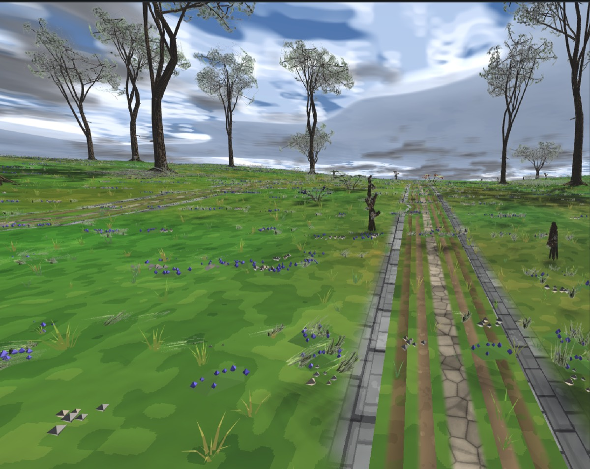

Пункты 1, 2, 3 и 5 очереди записки
docs/reports/trees-tiers/index.html · смотровая площадка
trees/forest-v2 · 28.08.2026
tools/flora_sow.py; у него есть прибор с контрольными плечами
(tools/check_flora_sow.py, цель ctest flora_sow_law).
Записка называет это «самым дешёвым и самым заметным изменением», и
проверяется оно ровно так, как названо: тем же числом растений, тем же составом
и той же землёй, посеянными двумя законами. Ключ --uniform у
генератора — это не отладка, а контрольное плечо: без него
«куртина читается лучше» — утверждение без сравнения.


Куртинность мерится индексом Кларка–Эванса: среднее расстояние до ближайшего соседа, делённое на пуассоновское ожидание для той же плотности. R < 1 — скучено, R ≈ 1 — случайно ровно, R > 1 — отталкивание.
| Плечо | растений | ближайший сосед | пуассон | R |
|---|---|---|---|---|
| куртинный посев (сдаётся) | 764 | 1.29 м | 4.04 м | 0.319 |
| равномерный (контроль) | 855 | 4.21 м | 4.22 м | 0.997 |
Контрольное плечо даёт 0.997 — то есть метрика умеет вернуть «ровно» и
0.319 не является её собственным свойством. Прибор
check_flora_sow.py держит оба порога (< 0.6 и 0.85…1.15) на
синтетической роще, без единого .dfo.
| Величина | значение | довод |
|---|---|---|
| ячейка центров | 16 м | куртина радиусом ~4 м обязана читаться отдельной; между центрами не меньше двух радиусов, между куртинами остаётся «просто трава» |
| доля занятых ячеек | 0.70 | треть ячеек пустая — иначе куртины смыкаются в сплошной подлесок |
| радиус куртины R₀ | 2.5…5.5 м | меньше — одно растение, больше — снова «везде» |
| рваная граница | R(θ)=R₀(1+0.30·sin3θ+0.16·sin5θ) | полоса 0.54…1.46 R₀ — лопасти и заливы; круглая граница читается клумбой |
| шаг кандидатов, несплошные | 1.05 м | 0.907 кандидата на м² |
| закон плотности | p(r)=(1−(r/R(θ))²)0.55 | плотное ядро, тонкий край; вне куртины — ноль |
| плотность внутри | 0.59/м² среднее, 0.91/м² в центре | производная от двух строк выше, а не назначенная |
| шаг кандидатов, сплошные | 2·Rслед−0.35 м | куст сплошной, и два куста в одной яме — находка судьи; куртина кустов реже по закону, а не по отбраковке |
| господствующий вид | 0.80 состава | «папоротник плотной группой в одном месте, зонтичные в другом» — это утверждение о СОСТАВЕ куртины, а не только о её границе |


Ковёр — платы 3×3 м со свесом 0.35 м, а не поштучный посев: сплошной
ковёр поштучно означал бы десятки тысяч размещений в .scene там,
где хватает трёх тысяч плат. Плата собрана из существующих рецептов
движка (MossPatch, FlowerCarpet,
PebbleCluster, короткий GrassTuft) — «мха нет» из
записки было про полку композиционных сцен, а не про кузницу.
| Величина | значение | довод |
|---|---|---|
| шаг укладки | 3.0 м | плата 3×3 со свесом; стык не читается, потому что куски внутри платы сидят двумя сгустками |
| пропущенных ячеек | 0.12 | «сквозь ковёр видна пятнистая земля» — проплешина как правило, а не как промах |
| плотность ковра | ≈1.8 куска/м² | 16 кусков мха или 13 травы на 9 м² плюс свес |
| рост ковра | 0.14…0.42 м | мох ниже (0.14–0.24), трава выше (0.32–0.42) — это и есть «два масштаба» приземного яруса |
| камни | 10–12% кусков платы | камень В покрове, того же роста, а не отдельный рассев поверх |
| вариантов платы | 4 мха + 4 травы | одна плата, повторённая три тысячи раз, — штамп, и его видно тем же глазом, каким видно равномерный рассев |
Управляющая величина — видимость неба, та же, которой заперт
интерьерный свет. Отдельного канала волна не завела: в вершинах земли этот
канал сегодня пуст (255 = «не знаю»), и заполнить его от деревьев сцены некому,
поэтому величина считается от полога там, где полог вообще известен — в
генераторе композиции. Это записано в заголовке
flora_sow.py как долг: когда движок начнёт печь полог в вершины,
расчёт обязан быть заменён чтением канала, а не оставлен рядом с ним.
| Величина | значение | довод |
|---|---|---|
| тень одной кроны | 0.72 в центре | под одиночным деревом видно 28% неба; две сомкнутые дают 0.078, три — 0.02, и «сомкнутый полог» получается сам, без второго порога |
| обод кроны | 0.30 радиуса | найдено прибором, а не глазом: первая редакция гасила тень от самого ствола, и в сомкнутой роще 7×7 давала видимость неба 0.93 — «полога нет». Крона затеняет почти всю свою площадь и рвётся только по краю |
| мох ниже | 0.42 | между порогами — ДИТЕРИНГ по хэшу ячейки: граница мягкая и рваная, а не контурная. Контурную границу глаз читает как границу текстуры |
| трава выше | 0.58 |
На сданной сцене: 354 платы мха под сомкнутыми кронами и 2578 плат травы на свету. Прибор проверяет обе чистые зоны и требует, чтобы в переходной полосе встречались оба вида.
| Величина | акценты | ковёр |
|---|---|---|
| ячейка группы | 17 м | 3 м (сплошь) |
| доля занятых ячеек | 0.30 | 0.88 |
| радиус группы | 1.2…2.6 м | — |
| шаг кандидатов | 1.35 м | — |
| плотность на всю площадь | ≈0.004/м² | ≈1.78/м² |
| порог света | злаки и цветы ≥ 0.55; грибы ≤ 0.45 | мох < 0.42 / трава > 0.58 |
Отношение плотностей — 400 к 1. «Ковёр и акцент — разные сущности с разными правилами плотности» сказано здесь числом, а не словом.

Единственный ярус, которого не было вовсе. Сделан без единой строки новой
геометрии: тот же строитель второй итерации forge_tree_v2 с
молодыми числами. Ручки возраста у v2 нет — есть габитус, — поэтому «молодость»
выражена набором параметров, и это записано честно, а не выдано за ручку:
| Рецепт | рост, м | трис | трис (дальняя форма) |
|---|---|---|---|
| tier-sapling-oak-a | 1.86 | 1008 | 568 |
| tier-sapling-alder-a | 1.92 | 1040 | 664 |
| tier-sapling-beech-a | 2.23 | 1346 | 768 |
| tier-sapling-oak-b | 2.72 | 2670 | 1014 |
| tier-sapling-alder-b | 2.81 | 2352 | 1154 |
| tier-sapling-beech-b | 2.88 | 2208 | 984 |
Посев подроста — не куртинный: подрост это одиночки и двойки там, куда дошёл свет. Куртинный процесс дал бы питомник. Ячейка 13 м, вероятность 0.14 в тени … 0.42 на свету (линейно по видимости неба), запрет ближе 2.6 м от взрослого ствола. На сцене — 115 деревец.
Пороги — по той же величине, которой судья ловит [off-path]:
dist_from_worn_edge. Генератор её не считает сам (своя сетка троп
была бы вторым источником — ровно тем, против которого написан
SceneWorld::path_clearance), а спрашивает у судьи: волна
завела ключ dfn_scene_check --path-field <шаг>.
| Кто | не ближе | довод |
|---|---|---|
| подлесок | 0.60 м | бортик — да, полотно — никогда |
| ковёр | 0.45 м | ковёр может дойти до самого края |
| подрост | 3.00 м | деревья держат дистанцию больше кустов — прибор проверяет именно это неравенство, а не два числа порознь |
| полоса бортика | 0.60…2.50 м | плотность подлеска в ней ×1.8: полоса подлеска и есть то, что делает тропу читаемой как тропу |
[no-overlap] и 5 [off-path] при «посеяно по порогам».
Причина: судья поворачивает коробку объекта на yaw и обводит осевой —
обводка растёт до r·√2, — а сеятель считал просто r,
то есть был на 41% мягче судьи. Множитель YAW_ENVELOPE — та же
геометрия, а не подгонка. После него ярусы не добавляют ни одной
находки.
Мерка — tools/measure_scene_budget.py: треугольники и партии,
посчитанные тем же правилом, каким приложение раскладывает сцену
(AppWorld.cpp: плитка 32 м, потоки wood/cards/bark/ground —
разные партии). Это потолок сцены, а не кадр: отсечение по пирамиде
меняется от того, куда смотришь, а файл — нет.
| Сцена | размещений | трис | плиток | дро | худшая плитка |
|---|---|---|---|---|---|
| forest-v2 ДО (полог) | 42 | 213 682 | 29 | 90 | 18 572 |
| forest-v2 ПОСЛЕ (ярусы) | 4 122 | 3 610 574 | 64 | 251 | 128 938 |
| то же, всё дальней формой | — | 1 539 518 | 64 | 251 | — |
| ориентир: trees-glade (в игре с 17.08) | 2 484 | 11 700 248 | 52 | 204 | 430 120 |
| ориентир: whiterun, россыпь | 108 | 324 416 | 27 | 84 | 58 662 |
Что выросло и почему это управляемо. Треугольники ×17, дро ×2.8 — но
абсолютные величины ниже сцены, которая играется третью неделю: 3.6 млн против
11.7 млн у полянки, худшая плитка 129 тыс. против 430 тыс. Дро выросли не от
куртин, а от площади: ковёр занял 64 плитки вместо 29, и каждая плитка
несёт 4 потока вместо 3. Лестница дальних форм построена: у каждой платы ковра
и каждого деревца есть -far (та же плата с обрезанным хвостом —
семя то же, поэтому оставшиеся куски стоят там же), и она снимает 57%
треугольников с дальних плиток.
--check остаётся управляемым и дифф объясним». Ни то,
ни другое сегодня не держится: gen_city.py — 8212 строк, его
сейчас правят волны домов и номенклатуры, а посев города обязан считаться с
палисадниками, дворами и мощением (зона домов, а не эта). Города — следующей
волной, отдельным диффом; закон посева к ним готов (flora_sow.py
не знает ничего про стенд). Бюджет Вайтрана снят в таблице выше как «до»:
россыпь города сегодня 324 тыс. трис, то есть под ярусы там есть место.
| Файл | что это |
|---|---|
tools/flora_sow.py | ЗАКОН посева: куртины, ковёр, акценты, видимость неба, опушка. Все числа здесь и нигде больше |
tools/check_flora_sow.py | прибор закона: четыре руки,
у каждой контроль, который обязан провалиться. Цель ctest
flora_sow_law |
tools/forge_tiers.cpp → dfn_forge_tiers |
кузница ярусов: 6 деревец подроста и 8 плат ковра (плюс дальние формы).
Страж имени отказывает на любом рецепте без приставки tier- |
assets/objects/tiers/ | 28 объектов новой полки |
tools/dfo_read.py | читалка .dfo на питоне:
габариты и трис для сеятеля и для счёта |
tools/measure_scene_budget.py | счёт трис и дро по правилу плитки приложения |
tools/check_scene.cpp | + ключ --path-field:
поле троп из того же источника, которым судья ловит off-path |
тесты ctest 119/119 зелёные, включая
trees_v1_frozen (хэши первой итерации не сдвинулись) и новый
flora_sow_law. Судья сцены: 4122 размещения, 5 находок — ровно
столько же, сколько давал один полог (сомкнутые кроны рощиц), то есть ярусы
не добавили ни одной.
VoxelMeshView::sky_visibility) и пуст для наружной земли.
Пока он пуст, порог мха считается в генераторе. Это долг, записанный в
заголовке файла, а не альтернативная система.GroundTufts) не тронут: он
живёт в ближних 12 м и переключения по свету пока не знает. Когда канал
наполнится, порог обязан переехать туда — иначе ковёр и пучки будут
отвечать на один вопрос двумя способами.